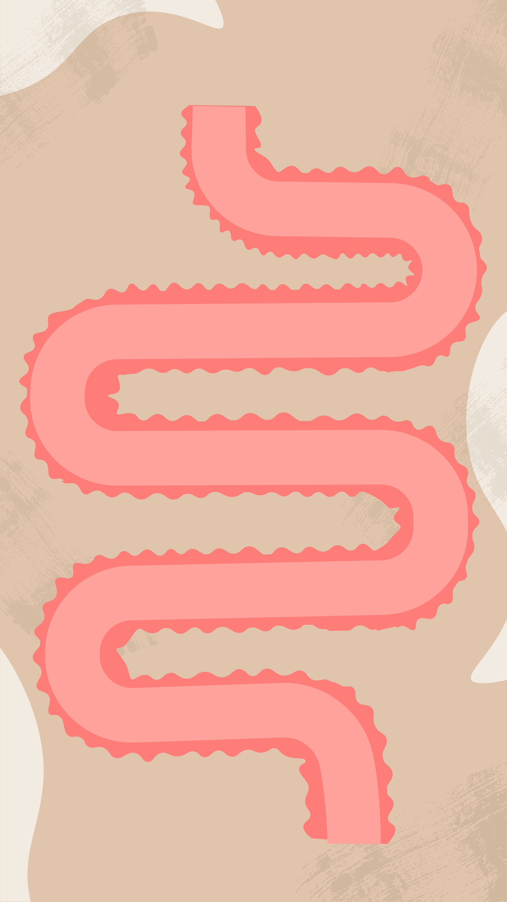

00:20



Prebiotic Fibre
Serat Prebiotik
Good Bacteria
Bakteria Baik
Producing SCFAs
Menghasilkan SCFA
Improved Gut Wall
Penembokkan Tembok Usus
Better Digestion
Pencernaan lebih baik
Drag the kibble from START to the end. Touching the border ends the game.